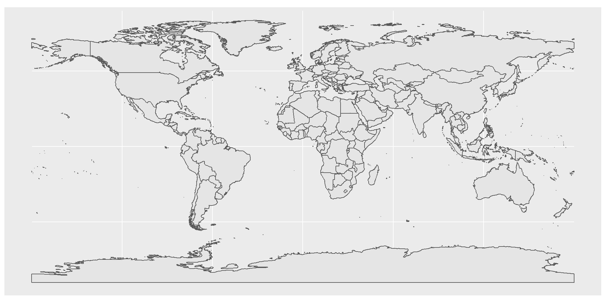
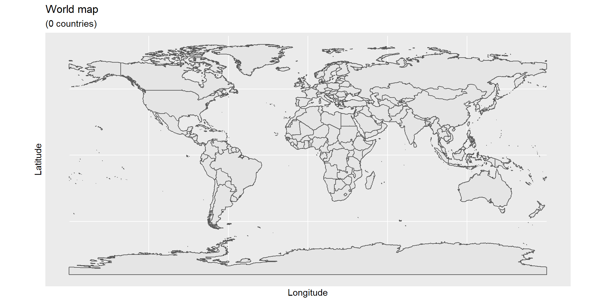
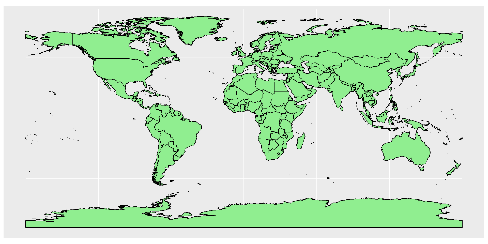
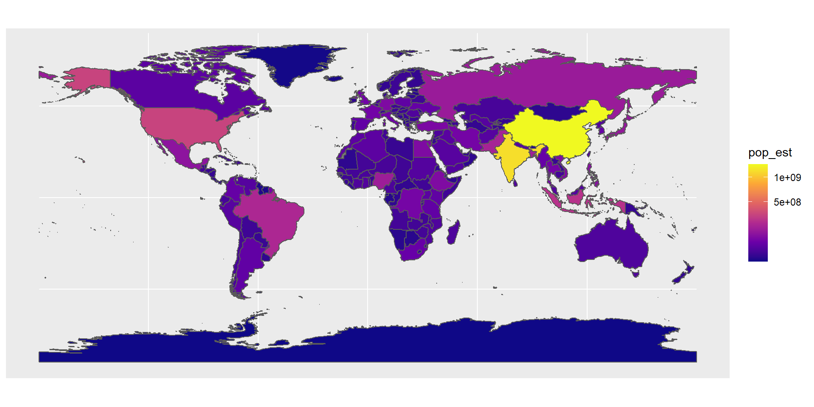
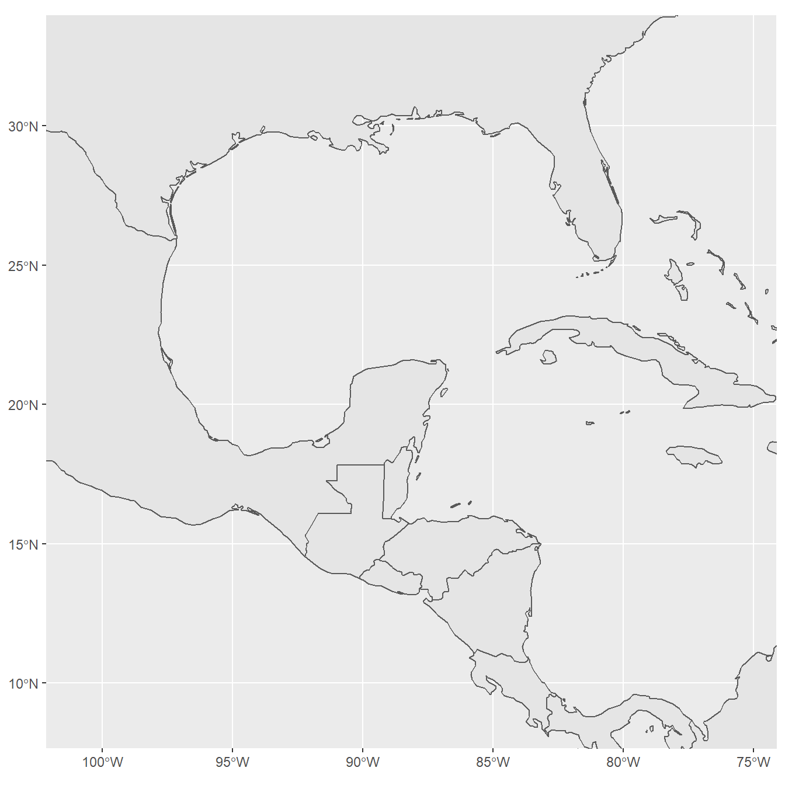
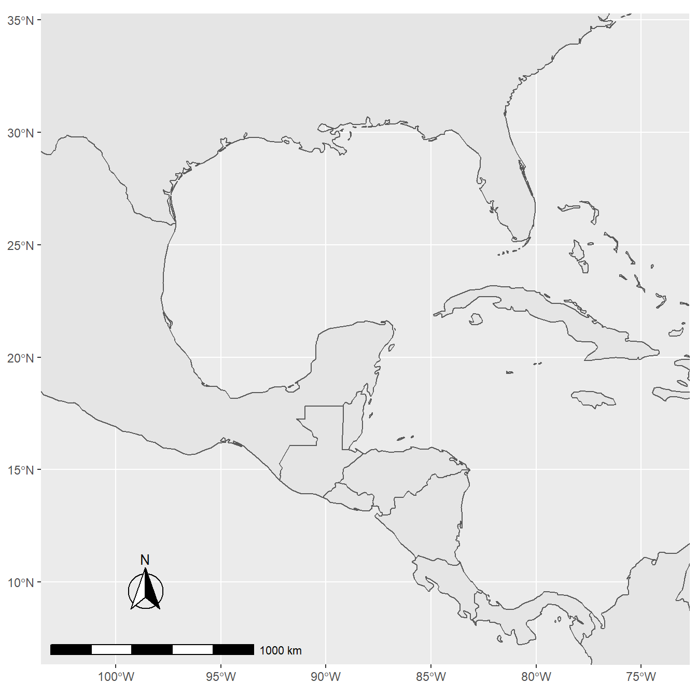
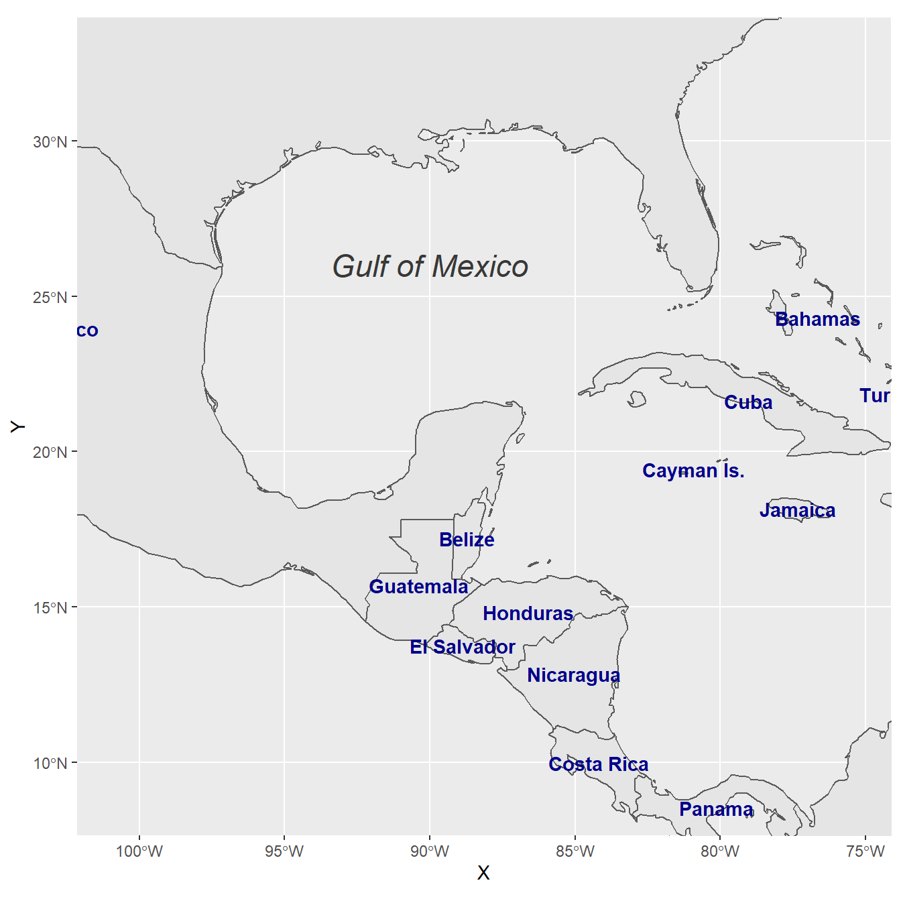
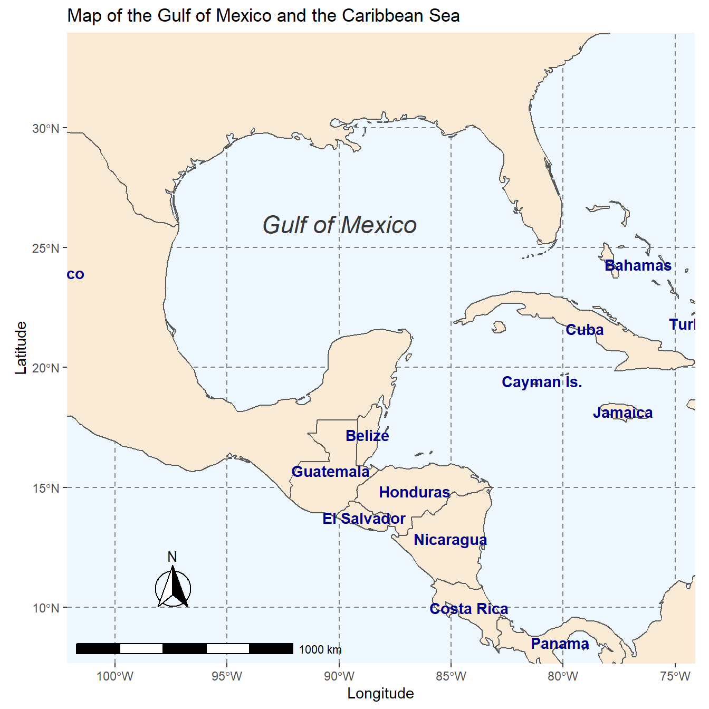

Drawing beautiful maps programmatically with R, sf and ggplot2 - Part 1: Basics
Mel Moreno and Mathieu Basille
DOWNLOADHERE
EDIT: Following a suggestion from Adriano Fantini and code from Andy South, we replaced rworlmap by rnaturalearth.
This tutorial is the first part in a series of three:
- General concepts illustrated with the world Map (this document)
- Adding additional layers: an example with points and polygons
- Positioning and layout for complex maps
In this part, we will cover the fundamentals of mapping using ggplot2 associated to sf, and presents the basics elements and parameters we can play with to prepare a map.
Maps are used in a variety of fields to express data in an appealing and interpretive way. Data can be expressed into simplified patterns, and this data interpretation is generally lost if the data is only seen through a spread sheet. Maps can add vital context by incorporating many variables into an easy to read and applicable context. Maps are also very important in the information world because they can quickly allow the public to gain better insight so that they can stay informed. It’s critical to have maps be effective, which means creating maps that can be easily understood by a given audience. For instance, maps that need to be understood by children would be very different from maps intended to be shown to geographers.
Knowing what elements are required to enhance your data is key into making effective maps. Basic elements of a map that should be considered are polygon, points, lines, and text. Polygons, on a map, are closed shapes such as country borders. Lines are considered to be linear shapes that are not filled with any aspect, such as highways, streams, or roads. Finally, points are used to specify specific positions, such as city or landmark locations. With that in mind, one need to think about what elements are required in the map to really make an impact, and convey the information for the intended audience. Layout and formatting are the second critical aspect to enhance data visually. The arrangement of these map elements and how they will be drawn can be adjusted to make a maximum impact.
0.1 A solution using R and its ecosystem of packages
Current solutions for creating maps usually involves GIS software, such as ArcGIS, QGIS, eSpatial, etc., which allow to visually prepare a map, in the same approach as one would prepare a poster or a document layout. On the other hand, R, a free and open-source software development environment (IDE) that is used for computing statistical data and graphic in a programmable language, has developed advanced spatial capabilities over the years, and can be used to draw maps programmatically.
R is a powerful and flexible tool. R can be used from calculating data sets to creating graphs and maps with the same data set. R is also free, which makes it easily accessible to anyone. Some other advantages of using R is that it has an interactive language, data structures, graphics availability, a developed community, and the advantage of adding more functionalities through an entire ecosystem of packages. R is a scriptable language that allows the user to write out a code in which it will execute the commands specified.
Using R to create maps brings these benefits to mapping. Elements of a map can be added or removed with ease. R code can be tweaked to make major enhancements with a stroke of a key. It is also easy to reproduce the same maps for different data sets. It is important to be able to script the elements of a map, so that it can be re-used and interpreted by any user. In essence, comparing typical GIS software and R for drawing maps is similar to comparing word processing software (e.g. Microsoft Office or LibreOffice) and a programmatic typesetting system such as LaTeX, in that typical GIS software implement a WYSIWIG approach (“What You See Is What You Get”), while R implements a WYSIWYM approach (“What You See Is What You Mean”).
The package ggplot2 implements the grammar of graphics in R, as a way to create code that make sense to the user: The grammar of graphics is a term used to breaks up graphs into semantic components, such as geometries and layers. Practically speaking, it allows (and forces!) the user to focus on graph elements at a higher level of abstraction, and how the data must be structured to achieve the expected outcome. While ggplot2 is becoming the de facto standard for R graphs, it does not handle spatial data specifically. The current state-of-the-art of spatial objects in R relies on Spatial classes defined in the package sp, but the new package sf has recently implemented the “simple feature” standard, and is steadily taking over sp. Recently, the package ggplot2 has allowed the use of simple features from the package sf as layers in a graph1. The combination of ggplot2 and sf therefore enables to programmatically create maps, using the grammar of graphics, just as informative or visually appealing as traditional GIS software.
0.2 Getting started
Many R packages are available from CRAN, the Comprehensive R Archive Network, which is the primary repository of R packages. The full list of packages necessary for this series of tutorials can be installed with:
install.packages(c("cowplot", "googleway", "ggplot2", "ggrepel",
"ggspatial", "libwgeom", "sf", "rnaturalearth", "rnaturalearthdata")We start by loading the basic packages necessary for all maps, i.e. ggplot2 and sf. We also suggest to use the classic dark-on-light theme for ggplot2 (theme_bw), which is appropriate for maps:
library("ggplot2")
theme_set(theme_bw())
library("sf")The package rnaturalearth provides a map of countries of the entire world. Use ne_countries to pull country data and choose the scale (rnaturalearthhires is necessary for scale = "large"). The function can return sp classes (default) or directly sf classes, as defined in the argument returnclass:
library("rnaturalearth")
library("rnaturalearthdata")
world <- ne_countries(scale = "medium", returnclass = "sf")
class(world)## [1] "sf" "data.frame"1 General concepts illustrated with the world map
1.1 Data and basic plot (ggplot and geom_sf)
First, let us start with creating a base map of the world using ggplot2. This base map will then be extended with different map elements, as well as zoomed in to an area of interest. We can check that the world map was properly retrieved and converted into an sf object, and plot it with ggplot2:
ggplot(data = world) +
geom_sf()
This call nicely introduces the structure of a ggplot call: The first part ggplot(data = world) initiates the ggplot graph, and indicates that the main data is stored in the world object. The line ends up with a + sign, which indicates that the call is not complete yet, and each subsequent line correspond to another layer or scale. In this case, we use the geom_sf function, which simply adds a geometry stored in a sf object. By default, all geometry functions use the main data defined in ggplot(), but we will see later how to provide additional data.
Note that layers are added one at a time in a ggplot call, so the order of each layer is very important. All data will have to be in an sf format to be used by ggplot2; data in other formats (e.g. classes from sp) will be manually converted to sf classes if necessary.
1.2 Title, subtitle, and axis labels (ggtitle, xlab, ylab)
A title and a subtitle can be added to the map using the function ggtitle, passing any valid character string (e.g. with quotation marks) as arguments. Axis names are absent by default on a map, but can be changed to something more suitable (e.g. “Longitude” and “Latitude”), depending on the map:
ggplot(data = world) +
geom_sf() +
xlab("Longitude") + ylab("Latitude") +
ggtitle("World map", subtitle = paste0("(", length(unique(world$NAME)), " countries)"))
1.3 Map color (geom_sf)
In many ways, sf geometries are no different than regular geometries, and can be displayed with the same level of control on their attributes. Here is an example with the polygons of the countries filled with a green color (argument fill), using black for the outline of the countries (argument color):
ggplot(data = world) +
geom_sf(color = "black", fill = "lightgreen")
The package ggplot2 allows the use of more complex color schemes, such as a gradient on one variable of the data. Here is another example that shows the population of each country. In this example, we use the “viridis” colorblind-friendly palette for the color gradient (with option = "plasma" for the plasma variant), using the square root of the population (which is stored in the variable pop_est of the world object):
ggplot(data = world) +
geom_sf(aes(fill = pop_est)) +
scale_fill_viridis_c(option = "plasma", trans = "sqrt")
1.4 Projection and extent (coord_sf)
The function coord_sf allows to deal with the coordinate system, which includes both projection and extent of the map. By default, the map will use the coordinate system of the first layer that defines one (i.e. scanned in the order provided), or if none, fall back on WGS84 (latitude/longitude, the reference system used in GPS). Using the argument crs, it is possible to override this setting, and project on the fly to any projection. This can be achieved using any valid PROJ4 string (here, the European-centric ETRS89 Lambert Azimuthal Equal-Area projection):
ggplot(data = world) +
geom_sf() +
coord_sf(crs = "+proj=laea +lat_0=52 +lon_0=10 +x_0=4321000 +y_0=3210000 +ellps=GRS80 +units=m +no_defs ")
Spatial Reference System Identifier (SRID) or an European Petroleum Survey Group (EPSG) code are available for the projection of interest, they can be used directly instead of the full PROJ4 string. The two following calls are equivalent for the ETRS89 Lambert Azimuthal Equal-Area projection, which is EPSG code 3035:
ggplot(data = world) +
geom_sf() +
coord_sf(crs = "+init=epsg:3035")
ggplot(data = world) +
geom_sf() +
coord_sf(crs = st_crs(3035))The extent of the map can also be set in coord_sf, in practice allowing to “zoom” in the area of interest, provided by limits on the x-axis (xlim), and on the y-axis (ylim). Note that the limits are automatically expanded by a fraction to ensure that data and axes don’t overlap; it can also be turned off to exactly match the limits provided with expand = FALSE:
ggplot(data = world) +
geom_sf() +
coord_sf(xlim = c(-102.15, -74.12), ylim = c(7.65, 33.97), expand = FALSE)
1.5 Scale bar and North arrow (package ggspatial)
Several packages are available to create a scale bar on a map (e.g. prettymapr, vcd, ggsn, or legendMap). We introduce here the package ggspatial, which provides easy-to-use functions…
scale_bar that allows to add simultaneously the north symbol and a scale bar into the ggplot map. Five arguments need to be set manually: lon, lat, distance_lon, distance_lat, and distance_legend. The location of the scale bar has to be specified in longitude/latitude in the lon and lat arguments. The shaded distance inside the scale bar is controlled by the distance_lon argument. while its width is determined by distance_lat. Additionally, it is possible to change the font size for the legend of the scale bar (argument legend_size, which defaults to 3). The North arrow behind the “N” north symbol can also be adjusted for its length (arrow_length), its distance to the scale (arrow_distance), or the size the N north symbol itself (arrow_north_size, which defaults to 6). Note that all distances (distance_lon, distance_lat, distance_legend, arrow_length, arrow_distance) are set to "km" by default in distance_unit; they can also be set to nautical miles with “nm”, or miles with “mi”.
library("ggspatial")
ggplot(data = world) +
geom_sf() +
annotation_scale(location = "bl", width_hint = 0.5) +
annotation_north_arrow(location = "bl", which_north = "true",
pad_x = unit(0.75, "in"), pad_y = unit(0.5, "in"),
style = north_arrow_fancy_orienteering) +
coord_sf(xlim = c(-102.15, -74.12), ylim = c(7.65, 33.97))## Scale on map varies by more than 10%, scale bar may be inaccurate
Note the warning of the inaccurate scale bar: since the map use unprojected data in longitude/latitude (WGS84) on an equidistant cylindrical projection (all meridians being parallel), length in (kilo)meters on the map directly depends mathematically on the degree of latitude. Plots of small regions or projected data will often allow for more accurate scale bars.
1.6 Country names and other names (geom_text and annotate)
The world data set already contains country names and the coordinates of the centroid of each country (among more information). We can use this information to plot country names, using world as a regular data.frame in ggplot2. The function geom_text can be used to add a layer of text to a map using geographic coordinates. The function requires the data needed to enter the country names, which is the same data as the world map. Again, we have a very flexible control to adjust the text at will on many aspects:
- The size (argument
size); - The alignment, which is centered by default on the coordinates provided. The text can be adjusted horizontally or vertically using the arguments
hjustandvjust, which can either be a number between 0 (right/bottom) and 1 (top/left) or a character (“left”, “middle”, “right”, “bottom”, “center”, “top”). The text can also be offset horizontally or vertically with the argumentnudge_xandnudge_y; - The font of the text, for instance its color (argument
color) or the type of font (fontface); - The overlap of labels, using the argument
check_overlap, which removes overlapping text. Alternatively, when there is a lot of overlapping labels, the packageggrepelprovides ageom_text_repelfunction that moves label around so that they do not overlap. - For the text labels, we are defining the centroid of the counties with
st_centroid, from the packagesf. Then we combined the coordinates with the centroid, in thegeometryof the spatial data frame. The packagesfis necessary for the commandst_centroid.
Additionally, the annotate function can be used to add a single character string at a specific location, as demonstrated here to add the Gulf of Mexico:
library("sf")
world_points<- st_centroid(world)
world_points <- cbind(world, st_coordinates(st_centroid(world$geometry)))
ggplot(data = world) +
geom_sf() +
geom_text(data= world_points,aes(x=X, y=Y, label=name),
color = "darkblue", fontface = "bold", check_overlap = FALSE) +
annotate(geom = "text", x = -90, y = 26, label = "Gulf of Mexico",
fontface = "italic", color = "grey22", size = 6) +
coord_sf(xlim = c(-102.15, -74.12), ylim = c(7.65, 33.97), expand = FALSE)
2 Final map
Now to make the final touches, the theme of the map can be edited to make it more appealing. We suggested the use of theme_bw for a standard theme, but there are many other themes that can be selected from (see for instance ?ggtheme in ggplot2, or the package ggthemes which provide several useful themes). Moreover, specific theme elements can be tweaked to get to the final outcome:
- Position of the legend: Although not used in this example, the argument
legend.positionallows to automatically place the legend at a specific location (e.g."topright","bottomleft", etc.); - Grid lines (graticules) on the map: by using
panel.grid.majorandpanel.grid.minor, grid lines can be adjusted. Here we set them to a gray color and dashed line type to clearly distinguish them from country borders lines; - Map background: the argument
panel.backgroundcan be used to color the background, which is the ocean essentially, with a light blue; - Many more elements of a theme can be adjusted, which would be too long to cover here. We refer the reader to the documentation for the function
theme.
ggplot(data = world) +
geom_sf(fill= "antiquewhite") +
geom_text(data= world_points,aes(x=X, y=Y, label=name),
color = "darkblue", fontface = "bold", check_overlap = FALSE) +
annotate(geom = "text", x = -90, y = 26, label = "Gulf of Mexico",
fontface = "italic", color = "grey22", size = 6) +
annotation_scale(location = "bl", width_hint = 0.5) +
annotation_north_arrow(location = "bl", which_north = "true",
pad_x = unit(0.75, "in"), pad_y = unit(0.5, "in"),
style = north_arrow_fancy_orienteering) +
coord_sf(xlim = c(-102.15, -74.12), ylim = c(7.65, 33.97), expand = FALSE) +
xlab("Longitude") + ylab("Latitude") +
ggtitle("Map of the Gulf of Mexico and the Caribbean Sea") +
theme(panel.grid.major = element_line(color = gray(.5),
linetype = "dashed", size = 0.5),
panel.background = element_rect(fill = "aliceblue"))
2.1 Saving the map with ggsave
The final map now ready, it is very easy to save it using ggsave. This function allows a graphic (typically the last plot displayed) to be saved in a variety of formats, including the most common PNG (raster bitmap) and PDF (vector graphics), with control over the size and resolution of the outcome. For instance here, we save a PDF version of the map, which keeps the best quality, and a PNG version of it for web purposes:
ggsave("map.pdf")
ggsave("map_web.png", width = 6, height = 6, dpi = "screen")Note: Support of
sfobjects is available since version 3.0.0 ofggplot2, recently released on CRAN.↩︎